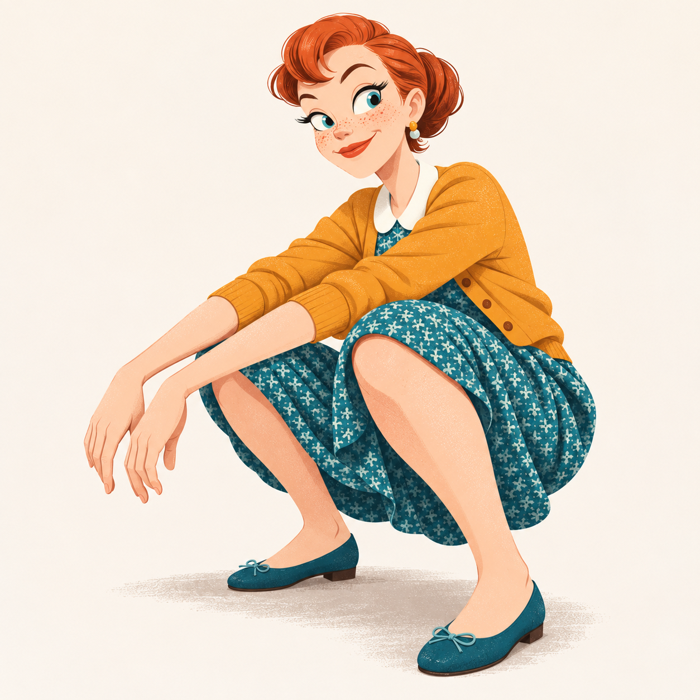
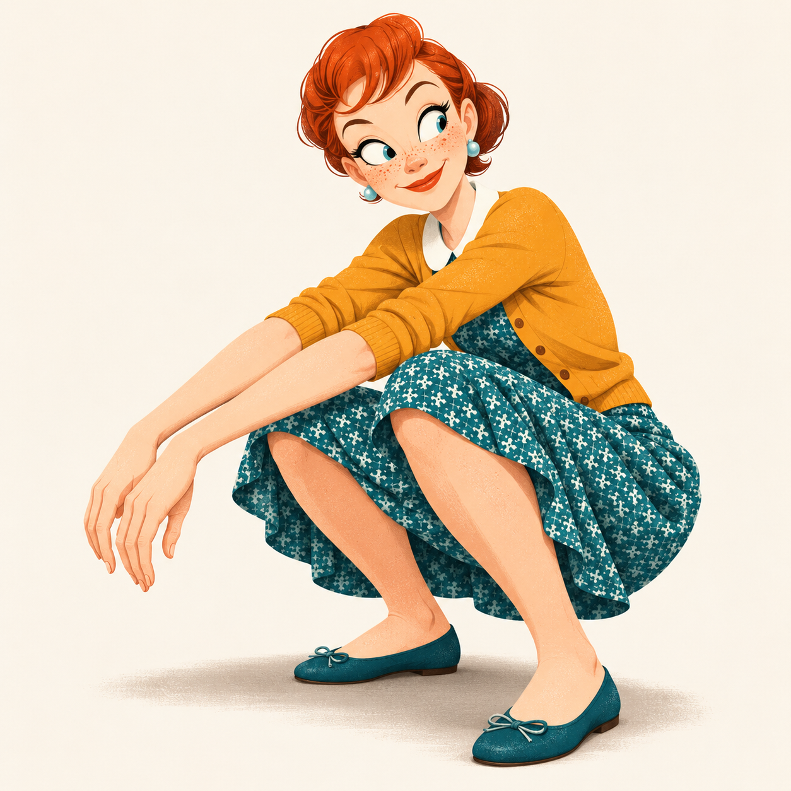

Direct
1 генерация
Открыть оригинал ↗Перенос по исходному фото позы. В этом примере сохранены узнаваемость персонажа и костюм; положение рук отличается от фото.
Один и тот же персонаж и референс позы. Сравниваются прямой перенос и перенос через промежуточный манекен с сеткой.

Открыть оригинал ↗
Открыть оригинал ↗Оба результата сохраняют характер и одежду персонажа. Guided не показал очевидного выигрыша на этом единственном образце. Отличия в угле головы и руках остаются заметны. Это качественное наблюдение по одному примеру, а не статистическая оценка.
Изображения подготовлены встроенным image_gen без выбора модели и без OpenAI API-ключа. Реальный оплаченный API-вызов не выполнялся. Дополнительный Guided этап означает две генерации вместо одной и добавляет возможность промежуточной ошибки.
Текстовые файлы можно открыть напрямую рядом с этой страницей.